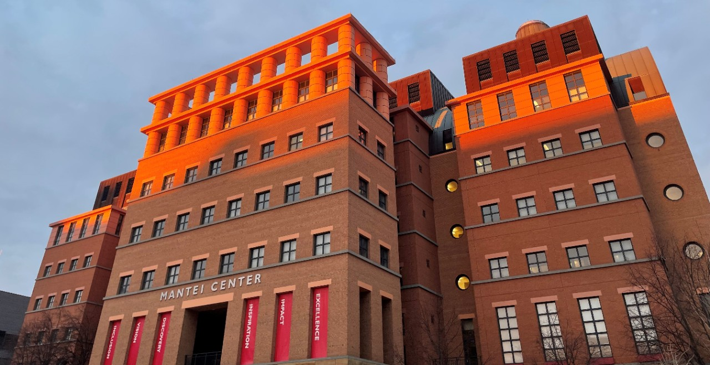

The College of Education, Criminal Justice Human Services and IT (CECH)
The projects highlighted in this section represent a broad and evolving spectrum of technology-driven disciplines—including Information Technology, Cybersecurity, Software Engineering, Data Analytics, and more. Housed within the College of Education, Criminal Justice, and Human Services (CECH), this platform is more than just a showcase—it's a launchpad for innovation, collaboration, and interdisciplinary problem-solving.
CECH is uniquely positioned at the intersection of education, justice, and technology, offering a supportive ecosystem where students from a wide variety of majors come together to explore real-world challenges and cutting-edge solutions. Whether you're developing a secure network infrastructure, creating an app to support social good, or diving into the ethical implications of emerging tech, CECH provides the tools, mentorship, and community to help ideas come to life.
Here, innovation isn’t limited by discipline—it’s driven by the diversity of thought, background, and ambition that each student brings to the table.
Click below to explore more of the project featured in this campus

The College of Engineering and Applied Science (CEAS)
The CEAS campus is a powerhouse of innovation, engineering excellence, and forward-thinking technology. Projects emerging from this space span a wide range of disciplines, including Mechanical, Electrical, and Computer Engineering, Civil Infrastructure, Artificial Intelligence, Robotics, and more. From hands-on prototyping to advanced simulations and research, CEAS is where theory meets real-world application.
As one of the most dynamic colleges at the University of Cincinnati, CEAS brings together future engineers, developers, and problem-solvers who are passionate about pushing boundaries and solving global challenges. Students have access to state-of-the-art labs, collaborative makerspaces, and a network of mentors and industry partners that encourage exploration beyond the classroom.
Whether you're building smart cities, optimizing energy systems, designing next-gen hardware, or writing the code that powers tomorrow, CEAS provides the environment, tools, and inspiration to turn your ideas into impactful solutions. It's a space where technical talent meets limitless ambition—and where the next generation of engineers rise.
Linder College of Business
The Lindner College of Business is where innovation, strategy, and entrepreneurship converge to shape the future of business. Projects showcased here reflect a wide range of disciplines—from Marketing, Finance, Accounting, and Business Analytics to cutting-edge topics like FinTech, Supply Chain Management, and Digital Strategy. At Lindner, students don't just study business—they live it through real-world case studies, startup incubation, consulting challenges, and data-driven decision-making.
With a strong emphasis on experiential learning, Lindner empowers students to take initiative, lead teams, and bring ideas to market. Whether you're developing a business model for a startup, analyzing financial trends, or building marketing campaigns with real-world impact, the Lindner environment supports bold thinking and strategic execution.
Surrounded by forward-thinking faculty, collaborative peers, and strong ties to industry leaders, Lindner students are equipped to lead in today’s competitive global economy. This is a space where business meets creativity, data meets action, and students transform into future-ready professionals.
The College of Design, Architecture, Art, and Planning (DAAP)
The College of Design, Architecture, Art, and Planning (DAAP) is a creative powerhouse where imagination meets innovation, and design becomes a tool for shaping the world. Projects from DAAP span across Architecture, Industrial Design, Fine Arts, Graphic Communication, Fashion Design, Urban Planning, and more—each rooted in a deep commitment to aesthetics, function, and impact.
DAAP students are not just artists or designers—they are visionary problem-solvers who craft experiences, environments, and solutions that challenge convention and inspire change. With access to cutting-edge studios, fabrication labs, and interdisciplinary collaboration, students bring ideas to life through sketching, prototyping, digital design, and immersive installations.
Whether you’re designing sustainable buildings, curating visual identities, reimagining urban spaces, or creating thought-provoking art, DAAP provides the environment and mentorship to push creative boundaries. It’s a space where bold ideas take form, and where creativity is not just expressed—but applied to the world around us.